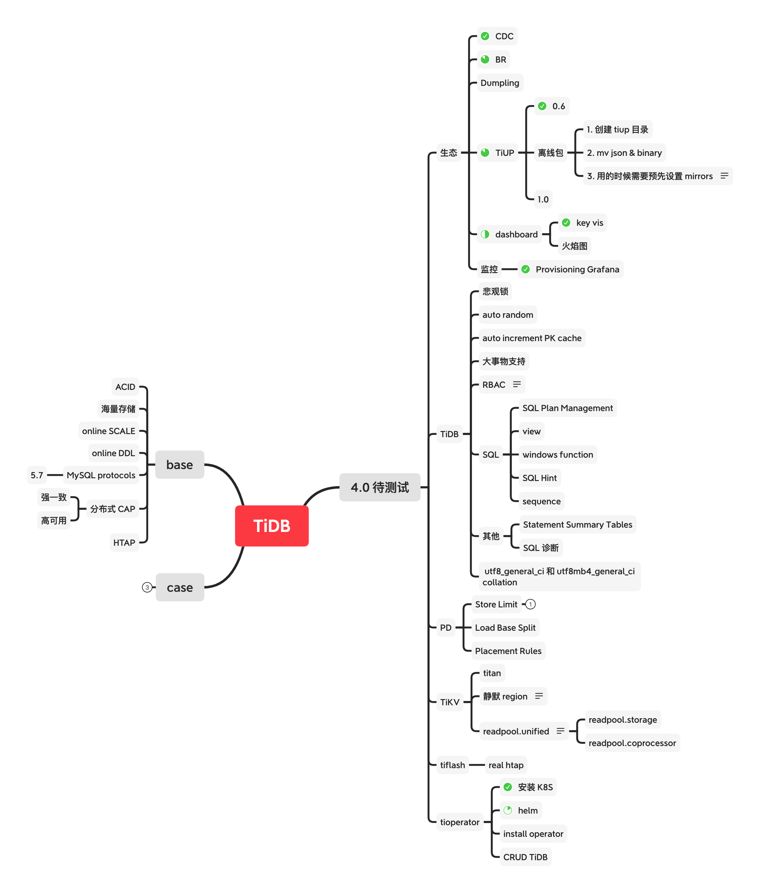
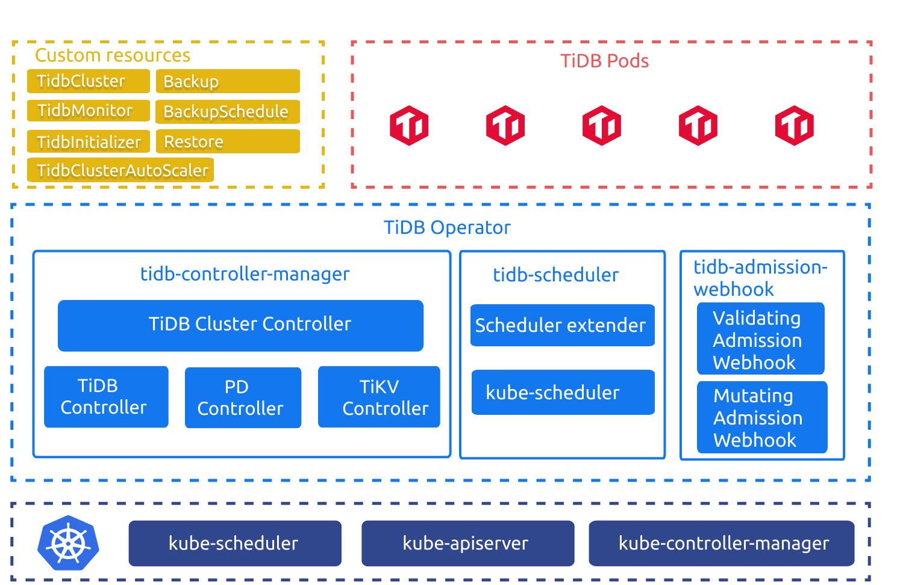
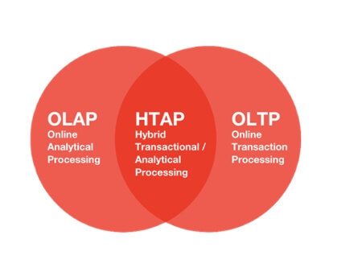
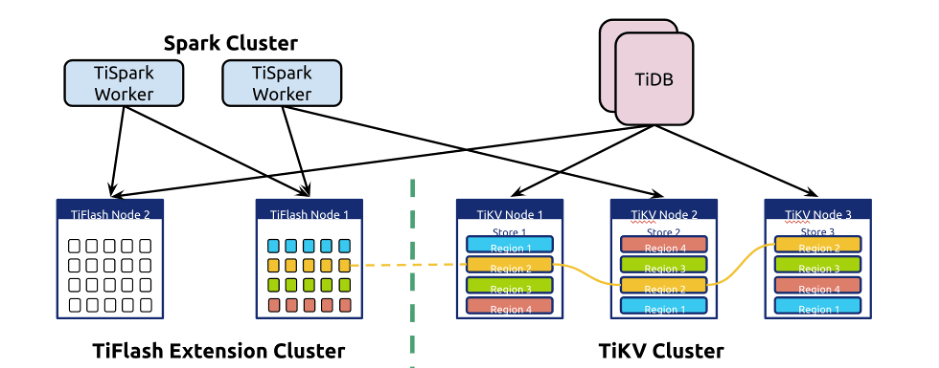
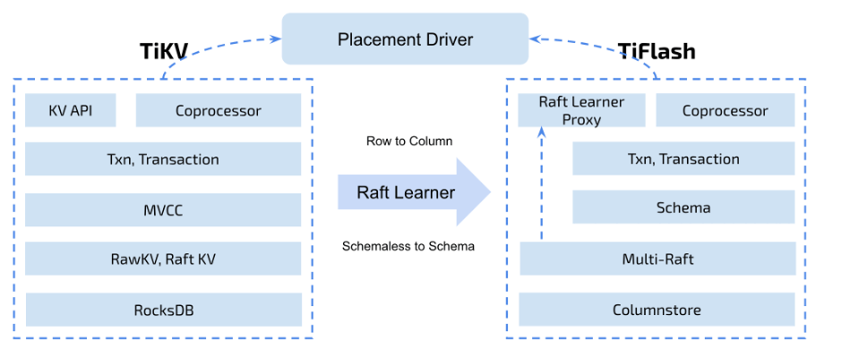
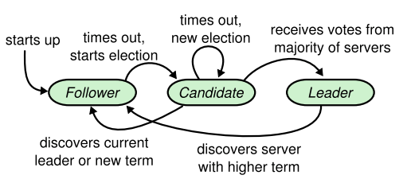
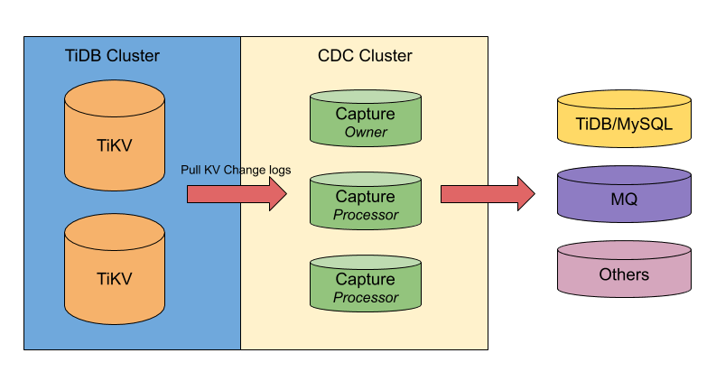
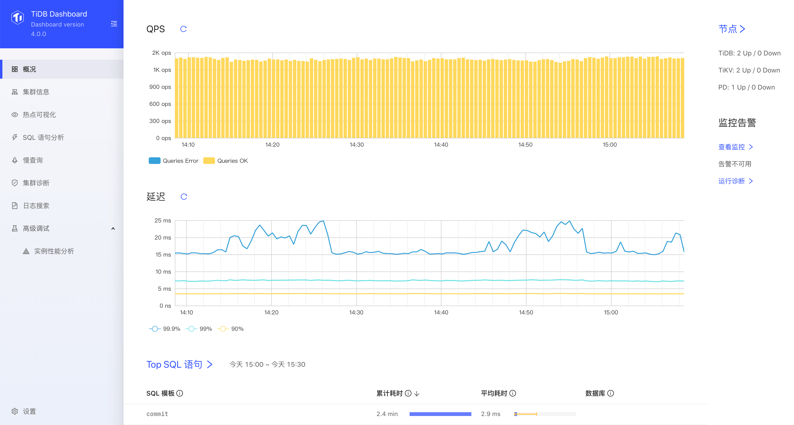

TiDB 4.0 新特性

Contents
[NOTE] Updated May 4, 2020. This article may have outdated content or subject matter.
0x00 Live
最近几周 TiDB 官方搞了好多次直播，一直在宣传 TiDB 4.0 版本的新特性，本文汇总下 4.0 特色功能；数据来源于 TiDB bilibili 直播、官网文档、用户微信群、公众号等几个地方。

0x01 new bee
部分数据来源与官方文档 TiDB 4.0 新特性尝鲜指南
TiUP
TiUP 从使用体验和官方文档介绍来看，是为了替代 tidb-ansible 安装部署的新工具。tidb-ansible 依赖与 ansible & ansible-playbook 程序才能使用，如果没有较好的 Linux 基础，使用 ansible 时会有很多不明所以的地方。官方写了个 TiUP 工具简化这部分工作内容，复制之前 tidb-ansible 的经验在不同场景下反复折腾了几个小时，部分情况下比 tidb-ansible 好用，但自定义场景时没有 tidb-ansible 灵活。见仁见智看各位老板怎么使用了。
TiDB-operator
TiDB-operator 其实是个老产品，但 GA 时间比较晚；而且从官方直播介绍时添加了不少新功能，所以作为 4.0 特色功能宣传也很赞。官网准备了丰富的文档 TiDB in Kubernetes 用户文档，折腾了许久按照网络文档搭建了一套 K8S 集群；如果要尝鲜 tidb-operator 功能，建议熟练运用 K8S 各种操作方式、网络插件理论、PVC / PV 场景、service / deployment 等知识。

Tiflash / HTAP
Tiflash 是实现 HTAP 场景中重要的一步，做到了行列混存、数据自动同步、数据一致性、TP / AP 统一入口、为 SQL 优化器加了列存场景；关键的是以后报表运算不需要再做 ETL 平台同步数据了，只要多出几台服务器加入 TiDB 集群就实现了自动同步「机器可采用 SAS 15K 机械磁盘，进一步减少成本」，Tiflash 存储节点支持高可用。



BR / CDC
Backup / Restore 工具（简称 BR，目前官方暂无技术文档，有一篇博文如何做到 10T 集群数据安全备份、1GB/s 快速恢复？）；从各种渠道收集该工具使用场景定位是快速备份、快速还原使用；使用 tikv-server 中的 raft 副本机制 + raft learner states 打造了 Backup 光速大亮数据快照备份功能。

Restore 是将 Backup 备份出来的数据还原到一个新的集群；不要问为啥不还原到当前集群，还是继续围观 BR 各种新 PR 吧。
通过 TiUP 工具目前可以安装 BR 工具，需要提前准备好比较大的磁盘。Backup 备份让每个 TiKV-server 将备份文件存放在本机磁盘或者 S3 上，做好磁盘规划。
TiCDC 通过拉取 TiKV 变更日志实现的 TiDB 增量数据同步工具；与大家用过的 TiDB-Binlog 场景重复，这个设计和场景应该是为了替代 TiDB-binlog 架构的。
之前 TiDB-binlog 是从 TiDB-server 绑定的 PUMP 组件收集 Binlog 数据，这会造成 TiDB-server 与 PUMP 产生状态依赖，同时 TiDB-server 如果损坏那么业务链接就会收到影响，且 PUMP 组件故障后也会丢失一部分 Binlog 信息，无法最小化修复这部分数据「需要重新做全量+增量」。
TiCDC 从 TiKV-server 中收集 change log 信息作为 Binlog 数据，通过封装整合数据然后传输到下游；单个 TiKV-server 出现问题也可以根据 PD-server 中的新信息去找到新的 region leader 继续工作。

悲观锁
不过多介绍了，看官方文档吧；TiDB 悲观事务模型
view / windows function
与 mysql 基本一致
SQL Hint & SQL Plan Management
暂未测试，放个 ToDo
- 测试 SQL Hint // 大概是 use index 或者
/* ---- */加强版 - 测试 SQL Plan Management // 大概是索引走错救命稻草
Dashboard
4.0 版本的 PD-server，通过浏览器访问 http://<PDIP>:<PDport>/dashboard/#/overview 可以看到各种新功能。比如快速抓火焰图（性能分析）、查看 key viz（热点可视化）、查看 slow query、日志搜索功能。

0x02 tree
智能调度
- 一种新奇的设计思路，暂无资料
- 通过将 follower read & Hot region schedule & Raft peer 结合起来一起食用
Dumpling/Lighting
- 升级版的 mydumper 和 loader 场景
DM
- 据说在做高可用和适配 K8S